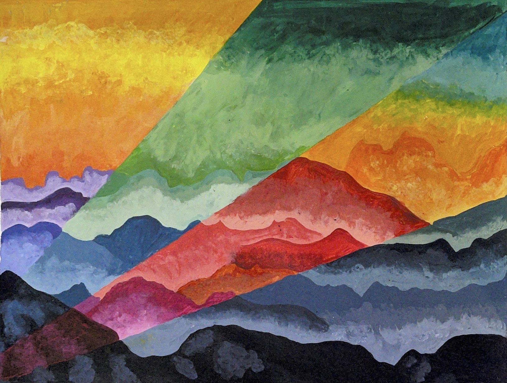
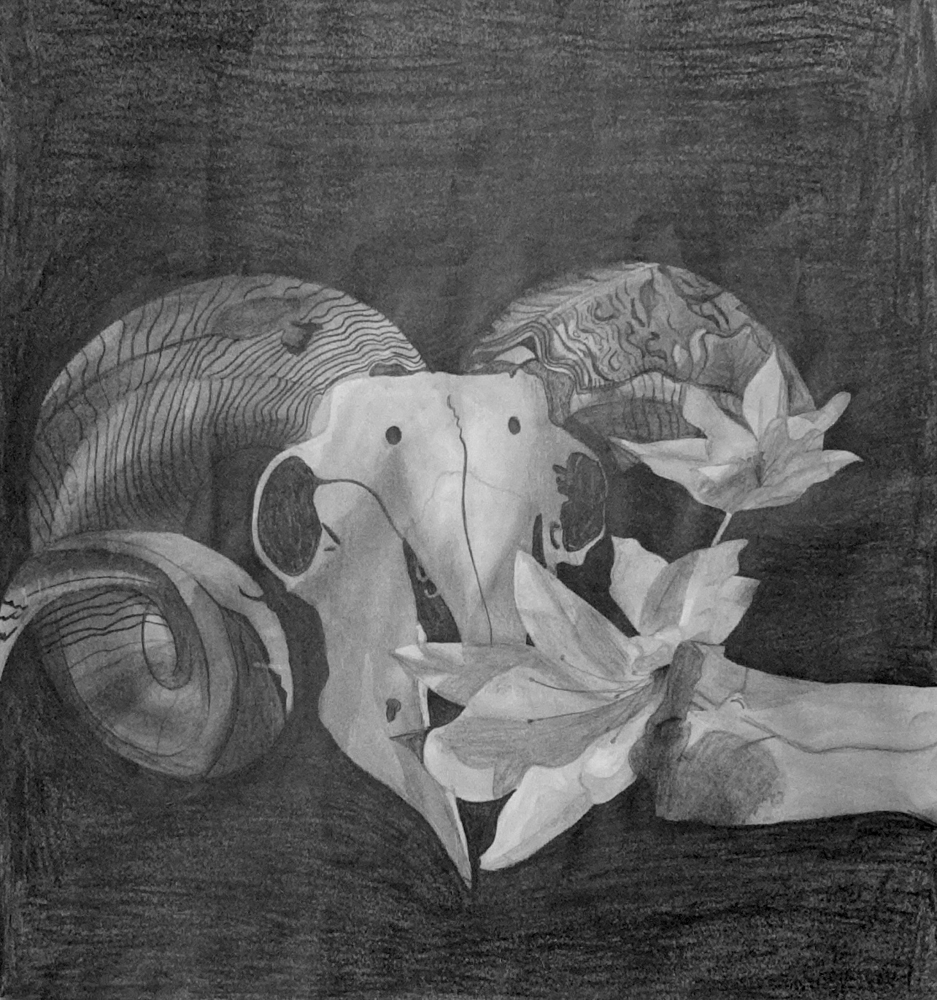
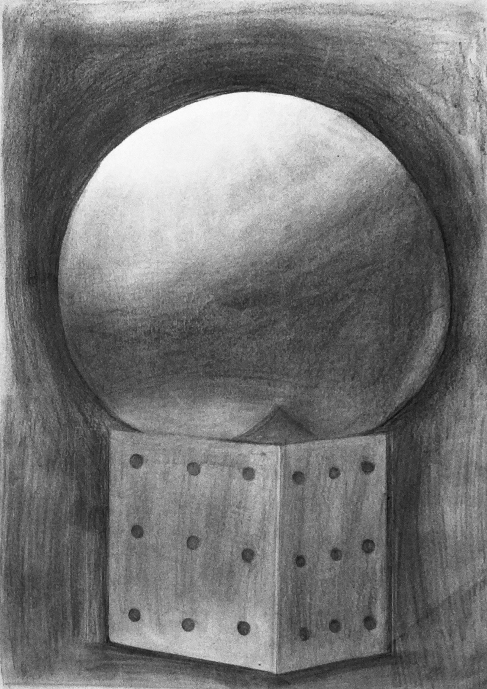
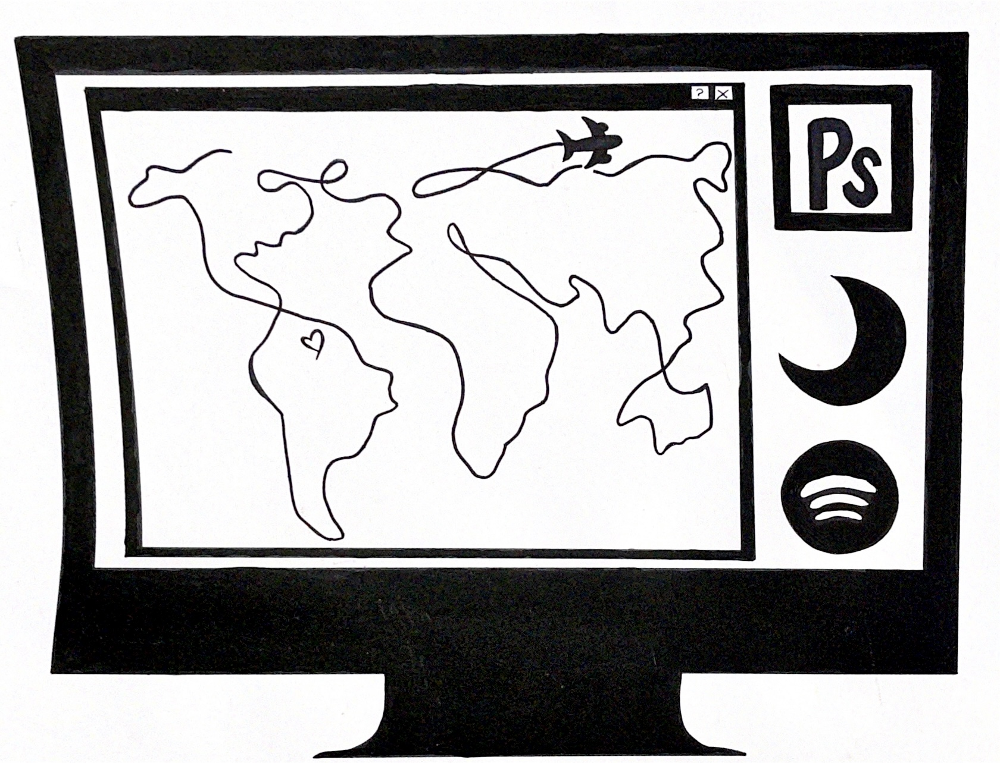

Paola Soteldo
Winter Park, FL
(832)898-6220
soteldopaola@gmail.com
I am full-time college student who is working towards getting a graphic design degree at Seminole State College. I have been drawing and working with graphic design for the past year. I started this journey in high school where I got certificates in Office 365 from Microsoft.
Education
- Northbrook High School
2016
Some High School
- Lake Howell High School
2017-2020
High School Diploma
- Seminole State College
2020-Ongoing
Graphic Design
Skills
- Basic HTML
- Graphic Design
- Logo Design
- Photo Editing
- Color Sense
- Social Media
- Management
- Bilingual (English and Spanish)
Software
- Adobe Illustrator
- Adobe Photoshop
- Adobe Lightroom
- Adobe Spark
Work Samples




